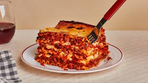

Lasagna
Home

Picture of Lasagna
Ingredients
- 1 pound ground beef
- 1 pound Italian sausage
- 2 cloves garlic, minced
- 1 onion, chopped
- 2 cans (15 ounces each) tomato sauce
- 2 cans (6 ounces each) tomato paste
- 2 cans (14.5 ounces each) diced tomatoes
- 2 teaspoons sugar
- 1 teaspoon dried basil leaves
- 1 teaspoon Italian seasoning
- 1/2 teaspoon salt
- 1/4 teaspoon black pepper
- 12 lasagna noodles
- 16 ounces ricotta cheese
- 1 egg
- 3 cups shredded mozzarella cheese
- 3/4 cup grated Parmesan cheese
Instructions
- Preheat oven to 375°F (190°C).
- In a large skillet, cook ground beef, sausage, garlic, and onion over medium heat until meat is no longer pink. Drain excess fat.
- Add tomato sauce, tomato paste, diced tomatoes, sugar, basil, Italian seasoning, salt, and pepper. Simmer for 30 minutes.
- Cook lasagna noodles according to package instructions. Drain and rinse with cold water.
- In a bowl, combine ricotta cheese, egg, and 1/2 teaspoon salt.
- Spread 1 cup of meat sauce in the bottom of a 9x13 inch baking dish. Layer with 4 noodles, half of the ricotta mixture, 1/3 of mozzarella cheese, and 1/4 of the meat sauce. Repeat layers twice more. Top with remaining noodles and meat sauce. Sprinkle with remaining mozzarella and Parmesan cheese.
- Cover with foil and bake for 25 minutes. Remove foil and bake for an additional 25 minutes or until cheese is melted and bubbly.
- Let stand for 15 minutes before serving.
- Enjoy your delicious homemade lasagna!